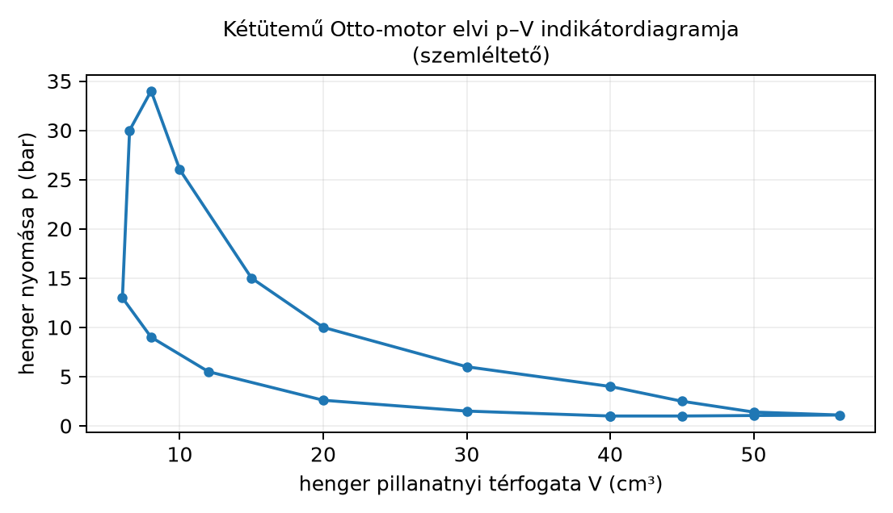

Egy régi motorkerékpár, láncfűrész vagy fűkasza javításakor a műhelyben gyakran hallani: „kétütemű a motorja, keveréket kell tankolni”. A kétütemű Otto-motor a mai autókban már gyakorlatilag nem szerepel, de kisgépekben, robogókban, motorkerékpárokban és régi kelet-európai járművekben ma is találkozhatunk vele. A szerelőnek értenie kell, miért van minden fordulatnál gyújtás, miért kell olajat keverni a benzinhez, és miért füstöl sok kétütemű motor erősen. Az itt megtanult munkafolyamat és öblítési elv nemcsak a régi járművek javításához kell, hanem a motorok ciklusfogalmának mélyebb megértéséhez is, amelyet a Motorjellemzők: lökettérfogat, sűrítési arány, középnyomás, teljesítmény, nyomaték, hatásfok és fogyasztás alfejezetben már használtunk.
Képzeljünk el egy metszetet: egy henger, benne dugattyú, a dugattyú alatt a forgattyús tengely és a forgattyúház, amely nemcsak a hajtóművet zárja le, hanem a friss keverék elősűrítésére szolgáló tömített szivattyúteret is alkot. A hengerfalban három fő csatornát látunk: a szívócsatornát, amely a karburátorból vagy befecskendezőből a forgattyúházba vezet, a kipufogócsatornát, amely az égéstérből vezeti el az égés utáni gázt, és a átömlőcsatornát, amely a forgattyúházból szállítja a friss keveréket az égéstérbe. A dugattyú palástja és a dugattyú alsó éle maga vezérli a csatornák nyitását-zárását, külön szívószelep vagy vezértengely nélkül. Ez az öngerjesztő, egyszerű csatornavezérlés magyarázza a kétütemű motor alacsony alkatrészszámát.
A metszeten a dugattyú az alsó holtpont közelében áll: a kipufogó- és az átömlőcsatorna nyitva, a szívócsatornát a dugattyú palástja zárja. A forgattyúházban elősűrített friss keverék (folytonos nyíl) az átömlőcsatornán át áramlik be, a dugattyú terelőorma felfelé tereli, és a hengerfej felé kiszorítja az égett gázt a kipufogócsatornán át (szaggatott nyíl). A HTML-változat négy lépésben mutatja a munkafolyamatot (FHP és égés; kipufogó nyit; átömlő nyit, öblítés; felfelé mozgás közben sűrítés felül, szívás alul).
Definíció. A kétütemű Otto-motor olyan belső égésű motor, amelyben a teljes munkafolyamat — szívás, elősűrítés, égés, expanzió, kipufogás és öblítés — a dugattyú két üteme, azaz a forgattyús tengely egy fordulata alatt játszódik le. A gyújtás minden fordulatnál, felső holtpont közelében következik be.
A kétütemű motor feladata ugyanaz, mint a négyüteműé: hőenergiából forgató nyomatékot állítani elő. A szerkezet egyszerűbb, mert nincs vezérműtengely, szelep és szelephajtás; a töltéscserét a dugattyú és a csatornák látják el. A háromcsatornás alapkivitelben az égéstér a dugattyú felett, a második munkateret a dugattyú alatti forgattyúház alkotja. A forgattyúház tömített, mert a dugattyú felfelé mozgásakor benne vákuum, lefelé mozgásakor túlnyomás keletkezik. Ez a szivattyúhatás a töltés elősűrítésének kulcsa.
A munkafolyamatot a felső holtponttól indulva érdemes végigkövetni:
Összefüggés. A kétütemű motor elméletileg kétszer annyi munkaciklust ad, mint az azonos fordulatszámon járó négyütemű motor. Ha a fordulatszám (1/min), a gyújtások másodpercenkénti száma
Ez a képletet használjuk a Motorjellemzők alfejezetben bemutatott teljesítmény-képletben is. ∎
Továbbvitt eredmény. A kétütemű minden fordulat alatti munkaciklusa, a forgattyúház-előkompresszió és az öblítési veszteség elve a vizsgafeladatokban rendszeresen visszatér; a jelen alfejezet példái a Írásbeli és szóbeli vizsgafelkészülés: témakör-térkép és mintafeladatok alfejezetben használhatók fel.
A forgattyús tengely szögéhez rendelhető diagram megmutatja, mikor nyitnak és zárnak a csatornák. Az alap háromcsatornás motor szimmetrikus vezérlési diagramú: a kipufogó- és átömlőcsatorna nyitva tartása az alsó holtpontra szimmetrikus (a csatornavezérlés miatt a nyitás és a zárás ugyanakkora szöggel van AHP előtt, illetve után). A kipufogócsatorna például 90°-kal az alsó holtpont előtt nyit, 90°-kal az alsó holtpont után zár; az átömlőcsatorna 60°-kal az alsó holtpont előtt nyit, 60°-kal utána zár (példaértékek, ellenőrizendő: konkrét motor gyártói adata). Ez a szimmetria egyszerű szerkezetet ad, de hátránya, hogy a friss keverék és az égésgáz töltéscseréje csak rövid ideig tart, és a keverékveszteség nagy.
Az aszimmetrikus vezérlési diagram többlet elemmel javítja a feltöltést és a teljesítményt. A gyakorlatban:
A bal oldali kördiagram a szimmetrikus vezérlést mutatja (0° = FHP felül, a forgásirány az óramutató járása szerinti): a kipufogócsatorna 90°-kal AHP előtt nyit és 90°-kal utána zár (180°-os ív), az átömlő 60°/60° (120°), a szívás az FHP körül szimmetrikus (65°/65°, szemléltető). A jobb oldalon membránszelep vagy forgótárcsa teszi aszimmetrikussá a szívást (például 140° FHP előtt nyit, 50° után zár – szemléltető), a dugattyúvezérelt kipufogó- és átömlőcsatorna változatlan. Az értékek példák (ellenőrizendő: gyártói adat).
Az öblítés — a friss keverék beáramlása az égéstérbe és az égésgáz kiszorítása — a kétütemű motor legfontosabb minőségi jellemzője. Két alapvető elrendezést különböztetünk meg:
A kétütemű motor munkafolyamata nyomás–térfogat (p–V) diagramban is szemléltethető. Az alábbi, tanulási célú p–V görbe a hengeben lejátszódó elvi ciklust mutatja. A zárt görbe területe arányos a ciklusmunkával; minél nagyobb a terület, annál nagyobb a leadott munka.

A diagram horizontális tengelyén a henger pillanatnyi térfogata, függőleges tengelyén a henger nyomása látható. A görbe a kipufogócsatorna zárásától indul: a térfogat csökkenésével nő a nyomás (sűrítés), a legkisebb térfogatnál az égés meredek nyomásemelkedést ad, majd az expanzió során csökken; a kipufogócsatorna nyitásakor a nyomás hirtelen a légköri közelébe esik, az AHP körüli öblítés alatt a henger kis túlnyomáson marad. A hurok óramutató irányban jár körbe; a négyütemű motor külön gázcsere-hurka itt hiányzik, mert nincs külön szívó- és kipufogóütem. A valós indikátordiagram folyamatosan mért, sok tényezőtől függő görbe; ez a diagram csak az elvi lefutás megértését szolgálja.
Adott: egyhengeres kétütemű motor fordulatszáma .
Keresett: hány gyújtás következik be másodpercenként?
Képlet: .
Behelyettesítés:
Ellenőrzés: a motor fordulatonként egy gyújtást ad, ezért 100 fordulat/s esetén 100 gyújtás/s reális. ∎
Adott: egyhengeres kétütemű motor lökettérfogata , közepes effektív középnyomása , fordulatszáma .
Keresett: effektív teljesítmény wattban és kilowattban.
Képlet: kétütemű motornál a munkaciklusok száma másodpercenként , így
Behelyettesítés:
Ellenőrzés: a tipikus 50 cm³-es fűkasza-motor teljesítménye 1–3 kW nagyságrendbe esik, az eredmény elfogadható. ∎
Környezetvédelem. A kétütemű Otto-motor legnagyobb hátránya a magas szénhidrogén- (HC-) és részecske-kibocsátás, valamint a keverékolajjal összefüggő égési maradék. A friss keverék egy része az öblítés során égés nélkül kerül a kipufogóba, ami szagot, füstöt és hatékonyságvesztést okoz. A modern kétütemű kisgépekre és motorkerékpárokra szigorú európai emissziós határértékek vonatkoznak (ellenőrizendő: aktuális uniós kisgépmotor- és motorkerékpár-emissziós előírások). A használt keverékolajat, az olajos törlőrongyot és az elhasznált gyújtógyertyát veszélyes hulladékként kell gyűjteni a Veszélyes anyagok, hulladékok és környezetvédelem a műhelyben alfejezetben leírtak szerint.
Előírás. Kétütemű motor javításakor, próbajáratásakor a műhelyben a benzin–olaj keverék benzingőze robbanásveszélyes; a zárt térben járó motor kipufogógázát el kell szívni, és nyílt lángot, szikrázó szerszámot nem szabad a munkaterületen használni. A henger- és forgattyúház-tömítések cseréjénél a gyártói meghúzási nyomatékokat kell alkalmazni (ellenőrizendő: gyártói javítási adat). A munkát csak a gyártói utasítás és a tanműhelyi munkavédelmi szabályzat szerint szabad elvégezni.
Egy ügyfél régi, 50 cm³-es kétütemű robogót hoz a műhelybe: menet közben teljesítményt vesztett, majd leállt, újraindításkor nehezen forgott. A hibakeresés során a szerelő először megkérdezi a keverékarányt. Kiderül, hogy az ügyfél tiszta benzint tankolt, nem kevert hozzá olajat, mert nem tudta, hogy a motorhoz keverékolaj is kell. A tünetek: alacsony kompresszió (például 4 bar a szokásos 6–8 bar helyett (ellenőrizendő: gyártói adat)), száraz, világos gyertya, a dugattyúpaláston és a hengerfalon berágódási nyomok, felhordott alumínium. A szerelő elmagyarázza, hogy a kétütemű motornak nincs önálló olajkeringése, a kenést a benzinbe kevert olaj biztosítja. A javítás: dugattyú- és hengerfelújítás vagy -csere, a forgattyús hajtómű csapágyainak ellenőrzése, a gyújtógyertya cseréje, valamint a gyártó által előírt keverékarány (például 1:40 vagy 1:50) alkalmazása. A tanulság: a keverékolaj kihagyása nemcsak a motort károsítja, hanem a kétütemű motor alapvető szerkezeti-sajátossága, amit az ügyfélnek is tudnia kell.
1. A kétütemű motort négyüteműként számoljuk. Gyakori hiba, hogy a teljesítmény-képletben a munkaciklusok számát -nak veszik, pedig kétüteműnél . Ez a fordulatszám felére csökkentené a becsült teljesítményt. A helyes gyakorlat: mindig ellenőrizzük, hogy a motor kétütemű vagy négyütemű.
2. Az öblítés és a töltéscsere összekeverése a szívószelep nélküli csatornavezérléssel. Sokan azt gondolják, hogy a kétütemű motorban is van szívószelep, vagy hogy a friss keverék közvetlenül az égéstérbe kerül. Valójában a friss keverék először a forgattyúházba szívódik, ott elősűrítődik, és csak azután jut az égéstérbe az átömlőcsatornán keresztül.
3. Túlzott olaj a keverékben. A több olaj nem feltétlenül jobb kenést, hanem intenzív lerakódást, elkokszosodott kipufogócsatornát, gyújtógyertya-szennyeződést és nagyobb füstölést okoz. A keveréket mindig a gyártó előírása szerint kell összeállítani, például 1:40 vagy 1:50 arányban (ellenőrizendő: gép/kézikönyv szerint).
4. A p–V diagram területét nem a ciklusmunkával azonosítjuk. A kétütemű indikátordiagramon a zárt görbe területe a munkaciklus folyamán végzett munkát reprezentálja; a kipufogó-átömlő nyitás utáni szakasz a töltetveszteségekért felel. Ha valaki a diagramot csak „nyomásgörbeként” olvassa, nem érti az öblítési (frisskeverék-) veszteség és a többi veszteség szerepét.
1. feladat (A). Írja le egy munkalapon a háromcsatornás kétütemű motor munkafolyamatát a felső holtponttól indulva, lépésről lépésre, és írja le, mikor nyit a kipufogó-, az átömlő- és a szívócsatorna a dugattyú mozgásához képest!
2. feladat (A). Rajzolja fel a szimmetrikus vezérlési diagramot jelképesen: a függőleges tengelyen a csatorna nyitva/zárva, a vízszintes tengelyen a főtengely szöge 0–360°. Jelölje a felső és alsó holtpontot, a kipufogó- és átömlőcsatornák nyitási-zárási szögét, és magyarázza el, miért nevezzük szimmetrikusnak.
3. feladat (B). Egy motorkerékpár-motor kétütemű, hengerszáma 1, lökettérfogata 125 cm³, fordulatszáma 8000 1/min. Határozza meg, hány munkaciklus történik másodpercenként, és becsülje az effektív teljesítményt közepes effektív középnyomás esetén!
4. feladat (B). Egy 1:40-es keverékarányú kétütemű motorhoz 4,0 liter benzint készít a szerelő. Mennyi motorolajat kell belekeverni milliliterben? A gyártó előírása szerint a keverés után alaposan rázzuk össze a kannát; miért fontos ez?
5. feladat (C). Hasonlítsa össze a kétütemű és négyütemű Otto-motor munkafolyamatát: melyiknél hány fordulatonként van munkaütem, hol van a töltéscsere, és miért nagyobb a kétütemű fajlagos üzemanyag-fogyasztása és emissziója?
6. feladat (D). Egy fűkasza kétütemű motorja nem indul, a kihúzott gyújtógyertya száraz, de erős benzinszagot érezni. A kompressziómérő 3,5 bar értéket mutat (a kézikönyv szerint legalább 6 bar sűrítési csúcsot várnánk; ellenőrizendő: gyártói adat). Milyen hipotéziseket állíthat fel? Milyen méréseket végezne el a hibás alkatrész azonosítására? Mit kell ellenőrizni a forgattyúház tömítettségével kapcsolatban?
1. A munkafolyamat lépései: felső holtpont → égés, munkaütem; dugattyú lefelé, kipufogócsatorna nyit; átömlőcsatorna nyit, öblítés; dugattyú alsó holtponton át, átömlő- majd kipufogócsatorna zár; dugattyú felfelé, forgattyúház szívócsatorna nyit, szívás; dugattyú felett kompresszió; felső holtpont előtt szikra. A csatornanyitások: kipufogó- és átömlőcsatornát a dugattyú felső éle nyitja lefelé mozgás közben; a szívócsatornát a dugattyú alsó éle nyitja felfelé mozgás közben.
2. A szimmetrikus diagramon a kipufogócsatorna például 90°-kal AHP előtt nyit, 90°-kal AHP után zár; az átömlőcsatorna 60°-kal AHP előtt nyit, 60°-kal utána zár (példa). A görbe az alsó holtponthoz képest tükrös, ezért szimmetrikus. A szívás ettől függetlenül a dugattyú alsó élével vezérelt. Kördiagramos ábrázolását a vezérlési diagramról szóló szakasz ábrája mutatja.
3. Kétütemű motornál: . Effektív teljesítmény: . Számolás: ; ; .
Ez reális egy 125 cm³-es benzinmotorra.
4. 1:40 arány: . Az alapos összerázás azért fontos, mert a benzin és a speciális kétüteműolaj sűrűsége és viszkozitása eltér, a rosszul elkevert keverékből az olaj a tartály aljára ülhet, ami elégtelen kenést okozhat.
5. Kétütemű: minden fordulatnál munkaütem, a forgattyúházban előkompresszió, csatornavezérlés; nincs saját olajkeringés, kenés a keverékolajból. Négyütemű: minden második fordulatnál munkaütem, szelepes vezérlés, olajteknő/olajkeringés. A kétütemű fajlagos fogyasztása és emissziója nagyobb, mert az öblítésnél friss keverék veszik el, és az olaj egy része elégve távozik.
6. A száraz gyertya azt jelzi, hogy a hengerbe nem jut (elég) keverék; a benzinszag az üzemanyagrendszer vagy a karburátor felől szivároghat, vagy a gyenge forgattyúház-elősűrítés miatt a keverék nem jut át a hengerbe. A kompresszió alacsony, ami henger-, dugattyú-, gyűrű- vagy forgattyúháztömítés hibájára utal. Hipotézisek: kopott dugattyúgyűrű, kopott hengerfal, hibás hengerfejtömítés, repedt/szivárgó forgattyúháztömítés, hibás szívócsatorna-tömítés. Mérések: kompressziómérés nyitott és zárt fojtással; olajcsepp a hengerbe után újra kompressziót mérni (ha javul, gyűrűkopást jelez), szivárgásteszt; forgattyúház-tömítettség ellenőrzése alacsony nyomású füstszivattyúval. A forgattyúház tömítettsége kritikus, mert a keverék elősűrítése akkor működik, ha a ház nem szivárog; tömítetlenség esetén gyengül a feltöltés és romlik a kompresszió.
A kétütemű Otto-motor a munkafolyamatot a dugattyú két üteme, tehát a forgattyús tengely egy fordulata alatt teljesíti. A forgattyúház tömített szivattyútér, amely a friss keveréket beszívja, elősűríti, majd az átömlőcsatornán az égéstérbe nyomja. A kipufogó-, átömlő- és szívócsatornák nyitását a dugattyú mozgása vezérli; az alap kivitel szimmetrikus vezérlési diagramú, az aszimmetrikus megoldások (membránszelep, forgószelep, kipufogóoldali szelep) javítják a töltéscserét. Az öblítés lehet keresztáramú vagy hurkos; az utóbbi kisebb frisskeverék-veszteséget ad. A gyújtások másodpercenkénti száma , a teljesítmény . A motornak nincs önálló olajkeringése, ezért a benzinhez kevert olaj biztosítja a kenést. A kétütemű motor nagyobb fajlagos fogyasztással és szénhidrogén-emisszióval dolgozik, ezért a modern autókban nem használják, de kisgépekben és motorkerékpárokban ma is előfordul. Továbbvitt eredmény. A kétütemű minden fordulat alatti munkaciklusát, a forgattyúház-előkompressziót és az öblítési veszteséget a vizsgafeladatokban a Írásbeli és szóbeli vizsgafelkészülés: témakör-térkép és mintafeladatok alfejezetben alkalmazzuk.
A szöveg fizikai, mechanikai és termodinamikai alapjai stabil ismeretek. A gyújtások számára, a teljesítmény-képletre és a kétütemű munkafolyamatra vonatkozó összefüggések a szakkönyvi alapanyagból származnak. A gyártófüggő értékek — keverékarány, kompressziós csúcsnyomás, vezérlési szögek, csatornanyitási szögek, teljesítmény-adatok — tanulási példák, és minden járműnél a gyártói javítási adatot kell figyelembe venni. A határértékek, emissziós normák és egyéb jogszabályi követelmények ellenőrizendők. A p–V indikátordiagram kitalált, szemléltető adatsor, nem mért érték. A tűz- és robbanásvédelmi előírások az általános járműjavító műhelyi gyakorlatot követik; a tanműhelyben az aktuális munkavédelmi szabályzat az irányadó.